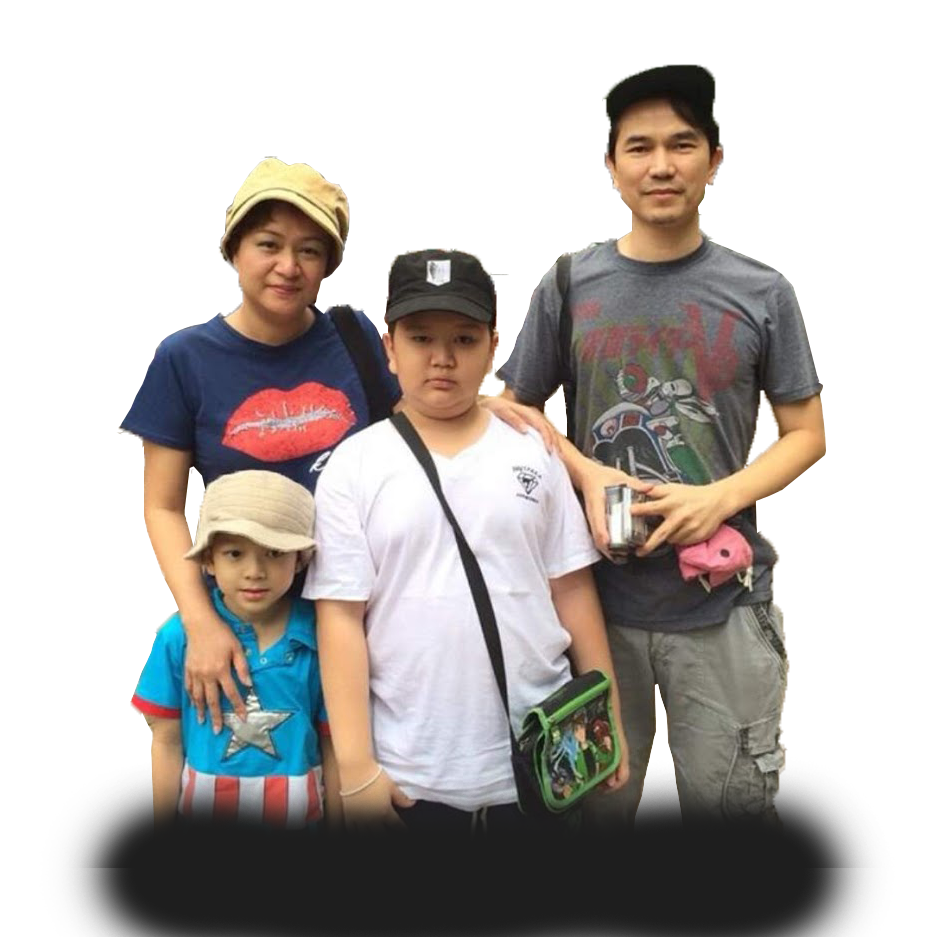

<!DOCTYPE htlm!>
<htlm>
    <head>
        <title> Chapter 4 : การจัดรูปตัวอักษร </title>
            <meta charet= "UTF-8">
            <meta name="author" content="Nattwat Tungjit">
        <style>
             body {
                 font-family: "RSU" , "RSU" , "RSU";
                 color: white;
                 background-color:#39adca;
                 text-align: left;
                 font-size: 25px;
                 }
                body {
	            background-image: url("IMG/Untitled-3.png");
                } 
                p{
                font-size: 40; 
                text-shadow: 2px 3px 6px rgb(220, 75, 75);
                }
                h1
                {
                    text-shadow: 2px 3px 6px rgb(220, 75, 75);   
                }
        </style>

    </head>
    <body>

        <h1><center> My family </center> </h1>    
        <font face = "RSU" font size="10" color="" ><center><p>ครอบครัวของฉัน</p></center></font> <br> 
        <center></center>
            <p>
                พ่อ : นายประยงค์ ตั้งจิตรนุสรกุล อายุ : 47ปี <br>
                แม่ : นางเกศมณี ตั้งจิตรนุสรกุล อายุ : 46ปี <br>
                น้องชาย : เด็กชายพัชรพล ตั้งจิตรนุสรกุล อายุ : 12ปี  <br>
                และผม : นายณัฐวัฒน์ ตั้งจิตรนุสรกุล อายุ : 16ปี <br>
        
            </p>
    </table>
    </body>
</htlm>